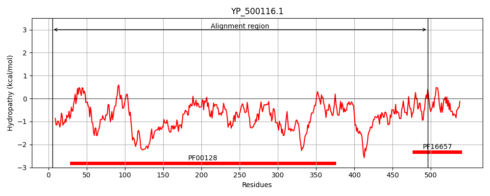
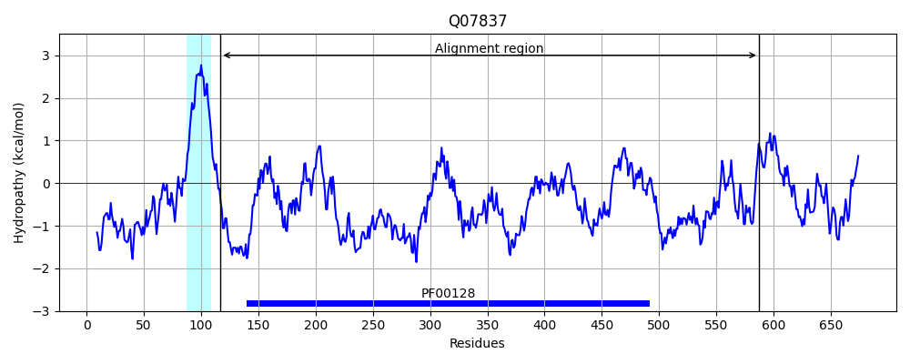
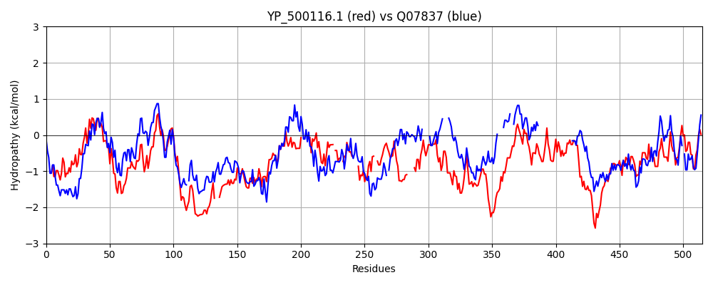

Hit Accession: Q07837
Hit TCID: 8.A.9.1.2
Hit Description: gnl|BL_ORD_ID|12308 gnl|TC-DB|Q07837|8.A.9.1.2 Neutral and basic amino acid transport protein rBAT OS=Homo sapiens GN=SLC3A1 PE=1 SV=2
Mach Len: 515
e:0.000000
Query TMS Count : 0
Hit TMS Count: 1
TMS-Overlap Score: 0.000000
Predicted Substrates:None
BLAST Alignment:
Score: 675 , Bit scores: 264 bits, E-value: 3.4e-80, Alignment length: 515, Percentage identity: 33
Query: 5 WWKEAVAYQVYPRSFNDSNHDGIGDLPGMIDKLDYLKDFGIDVIWLSPMFKSPNDDNGYDISDYQEIMDEFGTMEDFDRLLKGVHDRGMKLILDLVVNHTSDEHPWFIESKSSKDNPKRDWYIWQDPKPDGSE---PNNWESIFNGSTWEYDANTEQYYFHLFSKKQPDLNWGNPEVRDAVFEMMNWWFDKGIDGFRVDAI------THIKKTFEAGDLPVPEGKT-YAPAF-DVDMNQPG----IQTWLQEMKDRSL--SKYDIMTVGEANGVSPDDADDWVG-----EENGKFNMIFQFEHLGLWNSGDSHFDVNSYKSVLNRWQKQLENKGWNALFIENHDQPRRVSTWGDDDKYWYESATSHAAVYFLQQGTPFIYQGQEIGMTNYPFESIETFNDVAVKNDYQIVKAQGGDVDALLAKYKDENRDNSRTPMQWDDTLNGGFTN-GEPWFPVNPNYKTINVAQQLEDEHSVLQFYKDLIQLRKSNDVYVYGQFDLVDAENSQVFAYTRTLN 496
WW+E YQ+YPRSF DSN DG GDL G+ DKLDY+ I +W++ +KS D Y + D++E+ FGTMEDF+ L+ +HD+G+KLI+D + NHTSD+H WF S+ ++ D+YIW D + + PNNW S++ S+W +D Q YFH F K+QPDLN+ NP+V++ + E++ +W KG+DGF +DA+ H++ + +P+ T Y+ + D Q G ++++ Q M S +Y M EA S D + G E + FN +L + ++ NS V+ W + + W I D R S G+ Y + + + F GTP Y G+EIGM G V A L + D N S++PMQWD++ N GF+ W P N +Y T+NV Q S L+ Y+DL L + + G F + +S YTR L+
Sbjct: 117 WWQEGPMYQIYPRSFKDSNKDGNGDLKGIQDKLDYITALNIKTVWITSFYKSSLKDFRYGVEDFREVDPIFGTMEDFENLVAAIHDKGLKLIIDFIPNHTSDKHIWFQLSR-TRTGKYTDYYIWHDCTHENGKTIPPNNWLSVYGNSSWHFDEVRNQCYFHQFMKEQPDLNFRNPDVQEEIKEILRFWLTKGVDGFSLDAVKFLLEAKHLRDEIQVNKTQIPDTVTQYSELYHDFTTTQVGMHDIVRSFRQTMDQYSTEPGRYRFMGT-EAYAESIDRTVMYYGLPFIQEADFPFN-----NYLSMLDTVSG----NSVYEVITSWMENMPEGKWPNWMIGGPDSSRLTSRLGNQ----YVNVMN--MLLFTLPGTPITYYGEEIGM--------------------------GNIVAANLNESYDINTLRSKSPMQWDNSSNAGFSEASNTWLPTNSDYHTVNVDVQKTQPRSALKLYQDLSLLHANELLLNRGWFCHL-RNDSHYVVYTRELD 587 | Protein Hydropathy Plots: |
|---|
|  |  |
Pairwise Alignment-Hydropathy Plot:
|
|---|
|  |